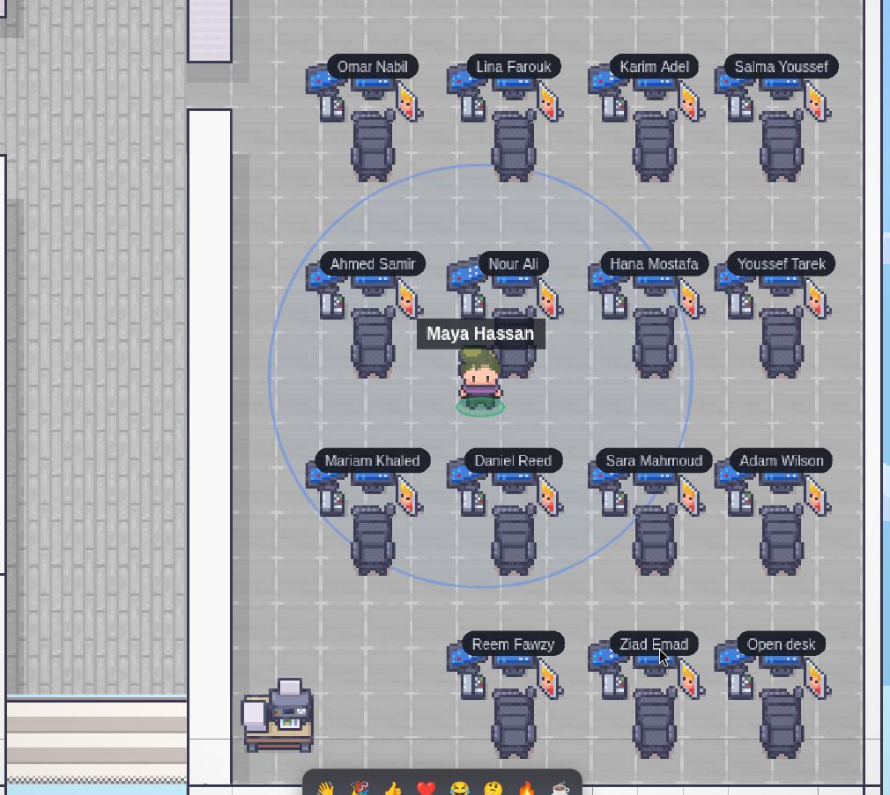
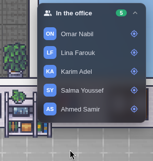
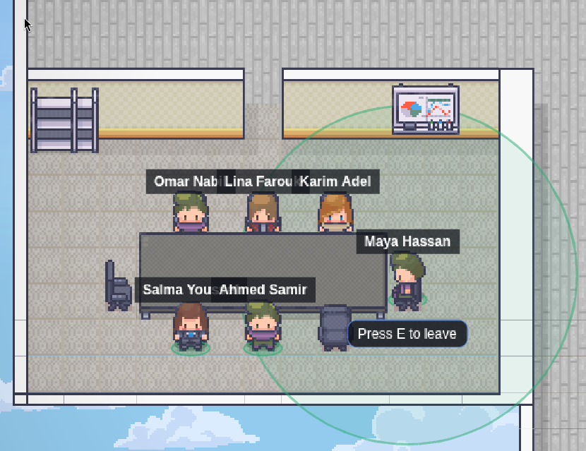
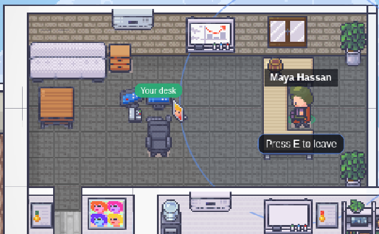
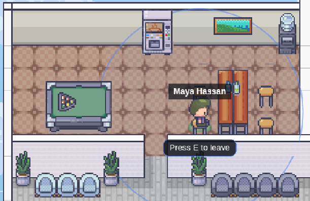

Features / A 2D office you can actually walk into
A 2D office you can actually walk into
WebNot decoration — the reason Slack and Teams still can't answer "is anyone free right now?". Everyone's avatar sits at their desk; walk up to someone and proximity voice connects automatically.
- Real-time presence for the whole floor, driven by a dedicated Colyseus server.
- Dedicated rooms: a meeting room, the CEO's office, a chill zone — each with its own layout and rules.
- Your calendar can set your status to "In a meeting" automatically while a busy event runs.

See who's online before you even open a chat.

Purpose-built rooms for the meetings that actually need a room.

Even leadership gets a desk on the same floor.

And a place that's just for a break.
